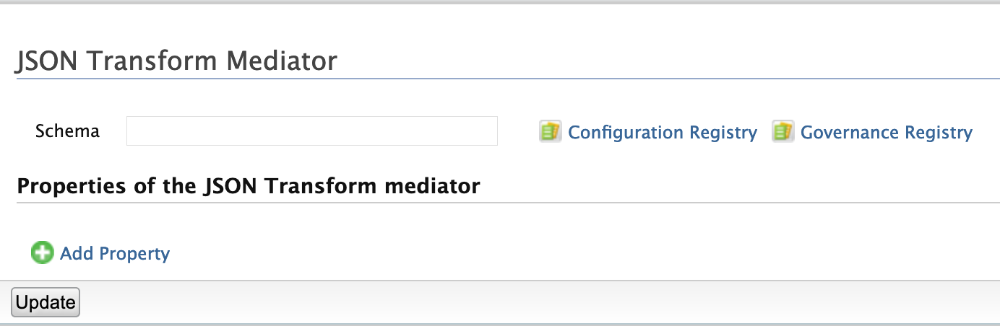
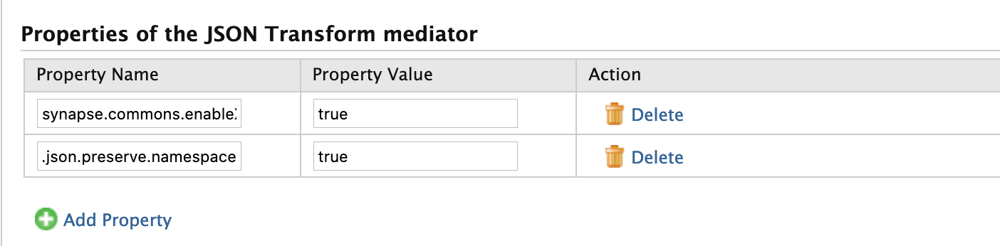

The JSON Transform mediator is used to manipulate JSON payload.
Figure1: JSON Transform Mediator
You can provide a JSON schema to modify the JSON payload. The schema has to be stored in the Registry or as a Local Entry.
You can add synapse properties to control the XML to JSON transformation.
Figure2: JSON Transform Mediator Properties